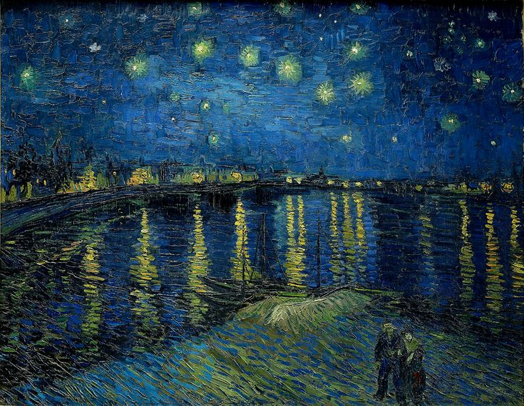

Embracing the Cosmos: Van Gogh's "The Starry Night Over the Rhône"
Vincent van Gogh's "The Starry Night Over the Rhône," painted in 1888, is a celestial masterpiece that transports us into a realm where the earthly and the cosmic converge. This nocturnal scene, bathed in the radiant glow of stars, captures the imagination with its ethereal beauty and the profound connection between the artist and the cosmos.
A Night on the Rhône
"The Starry Night Over the Rhône" places us on the banks of the Rhône River in Arles, France. Van Gogh's adept use of deep blues and vibrant yellows transforms the night sky and the reflective waters into a mesmerizing dance of color. The swirling patterns in the sky, reminiscent of turbulence and movement, create a sense of cosmic energy.
The Dance of Stars
The stars in this painting are not mere points of light; they are living entities that twirl and dance across the canvas. Van Gogh's distinctive brushstrokes, applied with a dynamic and swirling motion, evoke the pulsating energy of the universe. The stars seem to come alive, inviting viewers to join in the cosmic waltz.
Reflections on Water
The Rhône River serves as a mirror, capturing the celestial spectacle above. Van Gogh's use of reflections adds depth and dimension to the composition. The rippling water becomes a canvas within a canvas, echoing the celestial drama unfolding in the night sky.
The Emotional Landscape
"The Starry Night Over the Rhône" is more than a depiction of a physical scene; it is a manifestation of van Gogh's emotional landscape. Painted during a period of personal turmoil, the night sky becomes a metaphor for the artist's inner struggles and aspirations. The juxtaposition of the serene river and the cosmic chaos speaks to the complexity of the human experience.
Influence and Legacy
This painting, though not as famous as "Starry Night," holds a special place in van Gogh's body of work. Its influence on subsequent generations of artists is evident in the way it captures the intersection of nature, emotion, and the cosmos. The vibrant energy and emotional depth make it a source of inspiration for those who seek to connect with something larger than themselves through art.
Conclusion:
As we gaze upon "The Starry Night Over the Rhône," we are transported into a dreamscape where the boundaries between the earthly and the celestial dissolve. Van Gogh, with his masterful use of color and emotion, invites us to partake in the cosmic ballet unfolding above the tranquil waters. In this nocturnal masterpiece, we find solace and wonder under the vast and starry sky.
In the words of the artist, "For my part, I know nothing with any certainty, but the sight of the stars makes me dream."